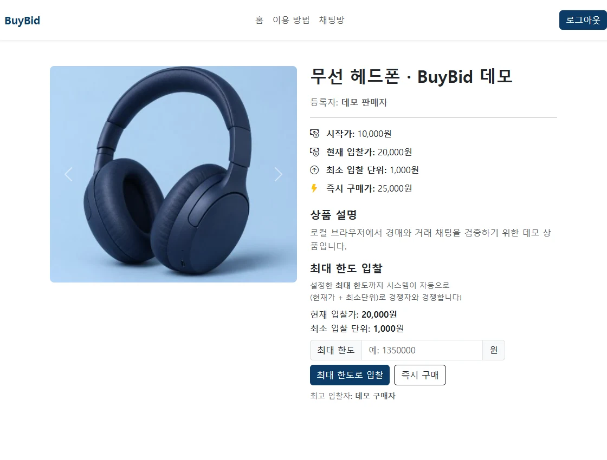
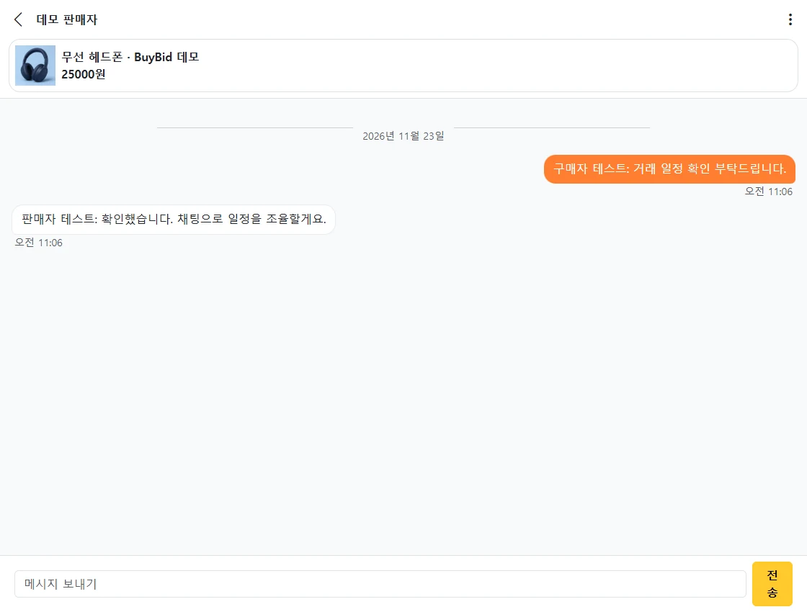

BuyBid · 동시 구매에도 낙찰은 한 건
최대 입찰가를 기준으로 현재가를 정하는 중고 경매 서비스입니다. 동시 구매를 제어하고, 거래가 확정되면 구매자와 판매자를 채팅으로 연결합니다.
한눈에 보는 성과
- 동시 구매
- 10회 중 10회
동일 상품에 동시 요청 2건
매회 구매 성공 1건, 상태 충돌 1건, 거래 채팅방 1개를 확인했습니다.
- 회귀 검증
- 34건 통과
H2 · 격리 MySQL
두 환경에서 각각 실행했습니다. 경매 가격과 인증·채팅, 업로드 롤백을 포함합니다.
- 실제 브라우저
- 메시지 2건
Chrome · 구매자와 판매자
각 계정이 한 건씩 전송했습니다. 상대 화면과 저장 이력에서 모두 확인했습니다.
- 목록 조회
- 기본 24개
상품 52개 · 최대 페이지 크기 50개
같은 카테고리의 상품으로 필터, 가격순 정렬, 페이지 경계를 확인했습니다.


동시 구매 수치는 MySQL 8.0.46에서 실행한 회귀 테스트 기준입니다.
프로젝트 개요
판매자가 상품 사진과 시작가, 증가액, 종료 시간을 등록합니다. 구매자는 지불할 최대 금액을 설정하고, 시스템은 경쟁 입찰에 따라 현재가를 갱신합니다. 경매가 마감되거나 즉시 구매가 확정되면 거래 채팅방이 열립니다.
- 상품 등록
- 최대 한도 입찰
- 거래 확정
- 거래 채팅
핵심 기능 1. 자동입찰과 거래 확정
현재가를 한 번 계산하고 같은 값을 저장한다
첫 입찰은 시작가로 처리합니다. 두 명 이상이면 최고 한도와 차순위 한도에 증가액을 더한 값 중 작은 값으로 현재가를 정하고, 시작가를 하한으로 둡니다. 최대 한도가 같으면 그 금액에 먼저 도달한 사람이 선두를 유지합니다.
min(20,000, 19,500 + 1,000)현재가 20,000원
낙찰자와 채팅방을 같은 트랜잭션에 저장한다
같은 상품을 변경하는 요청은 상품 행을 잠근 뒤 경매 상태를 다시 확인합니다. 먼저 처리된 요청이 낙찰자와 채팅방을 저장하면 뒤이어 온 요청은 종료 상태를 읽고 409를 받습니다. 방 저장에 실패하면 낙찰 확정도 롤백됩니다.
핵심 기능 2. 실시간 거래 채팅
채팅 이력 조회와 STOMP 구독·전송에 같은 참가자 확인을 적용했습니다. 구매자와 판매자가 한 건씩 보낸 메시지가 상대 화면에 표시됐고, 이력에서도 두 건을 다시 조회했습니다.

실제 실행 화면
격리된 MySQL과 Chrome에서 데모 계정 세 개를 사용해 등록, 경쟁 입찰, 거래 확정, 채팅을 실행했습니다.
상품 목록
등록한 상품의 썸네일과 현재가가 보입니다. 카테고리와 가격순 정렬은 서버에서 적용합니다.

/main문제를 해결하며 배운 점
통합 테스트는 통과했는데 브라우저 업로드는 403이었다
로그인 뒤 CSS와 JavaScript를 가져올 때 서버가 CSRF 쿠키를 삭제했습니다. 매 요청에서 JWT 인증을 새 세션 인증으로 처리한 것이 원인이었습니다. 암묵적 세션 인증을 제거한 뒤 정적 파일 요청과 실제 이미지 업로드를 함께 검증했습니다.
입찰 응답과 새로고침 뒤 가격이 달랐다
분기마다 가격 계산과 저장이 달랐습니다. 동일한 계산 결과를 응답과 데이터베이스에 사용하고, 저장된 현재가를 새 페이지에서 다시 확인했습니다.
이미지 등록 실패를 재현해 남는 데이터를 확인했다
이미지를 먼저 검증한 뒤 썸네일을 만들고, 트랜잭션이 롤백되면 게시 파일을 정리하도록 했습니다. 손상된 두 번째 이미지와 강제 롤백 테스트에서 새 상품 행, 이미지 행, 파일이 모두 0개였습니다.
기술 스택
- 서버
- Java 21, Spring Boot, Spring Security, Spring Data JPA
- 데이터
- MySQL, Flyway
- 화면·통신
- Thymeleaf, STOMP, SockJS
- 검증
- JUnit, MockMvc, H2, Chrome, GitHub Actions